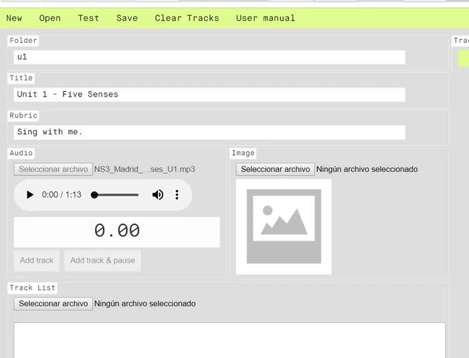

En este manual, vamos a ver cómo se crean los karaokes que irán enlazados en los libros de ByMe. Los karaokes deben ser enlazados tanto en el propio libro digital, como en el módulo correspondiente, sin embargo, esto será objeto de otros manuales (hotspots y resources respectivamente).
Como su propio nombre indica, se denominan Karaokes a la reproducción de una canción, en la que en simultaneo aparece el texto de la letra de la misma mientras muestra una imagen relacionada con el contenido de la canción.
Por tanto, vamos a explicar las fases de edición para conseguir generar cada uno de los Karaokes.
Desde editorial, se nos proporcionará la imagen, el audio y el texto completo de la letra:
Lo primero que hay que hacer es adaptar la imagen de origen proporcionada por editorial a un tamaño y formato adecuado, en este caso, sería:
Del mismo modo hay comprobar que el audio de origen proporcionado por editorial viene en formato adecuado:
Se ha de resaltar, que la nomenclatura de los archivos no puede contener ni espacios, ni caracteres especiales (como tildes, ñ, @, !, ?, apóstrofos, etc.), sin embargo, de momento no trataremos este problema, ya que la herramienta de edición realizará este proceso de forma automática.
En cuanto a la letra, prepararemos un txt con cada una de las frases que irán apareciendo en nuestro karaoke denominado “letra.txt”
Es buena práctica tener estos archivos en una carpeta de trabajo fuera del repositorio del que estemos trabajando.
Una vez tenemos el audio y la imagen preparados, los dejamos reservados para el montaje posterior mediante la herramienta correspondiente del CAT.
Para poder logarse en el CAT es necesario disponer de:
En primer lugar, nos aseguramos de que el CAT está perfectamente updateado:
Para acceder a la herramienta del Cat que nos ayudará a generar los karaokes pulsamos el siguiente icono, denominado Karaoke:
Pulsaremos el botón New.
En la pantalla principal rellenaremos los siguientes campos:
Para cargar el audio, en la parte correspondiente lo elegimos en su selector de archivos:
Para cargar la imagen, en la parte correspondiente lo elegimos en su selector de archivos:
Para cargar la letra tenemos dos opciones:
Ahora tenemos que definir los tiempos en los que aparecerá cada una de las frases. Para ello, pulsamos el play del reproductor de audio. Mediante el botón “Add track” y “Add track & pause” vamos marcando los tiempos.
Podemos utilizar cualquiera de los dos botones, según nos sea más sencillo de utilizar en cada caso.
Los campos de tiempo y texto también pueden ser editados a mano para realizar cualquier ajuste que sea necesario:
Podemos comprobar antes de guardar el resultado de nuestro trabajo pulsando el botón “Test”:
Si el resultado es satisfactorio procedemos al guardado del karaoke de esta unidad:
En caso contrario podemos eliminar alguno de los tracks:
O borrarlos todos de una vez:
Una vez salvados los cambios, procedemos a updatear el repositorio comprobando que se nos ha generado la carpeta karaoke con todo su contenido:
Realizaremos este proceso con cada uno de los karaokes de las distintas unidades, para ello tan solo tendremos que pulsar de nuevo el botón “New”.
Para volver a cualquiera de los karaokes que ya tenemos creados tan solo tendremos que dar al botón “Open” y seleccionar el que nos interese:
Para cualquier sustitución posterior, bastaría con editar cualquiera de los campos. En el caso de querer sustituir el audio o la imagen, bastaría con seleccionar el nuevo y, al salvar, automáticamente eliminará el anterior archivo comiteando el nuevo que hayamos seleccionado.